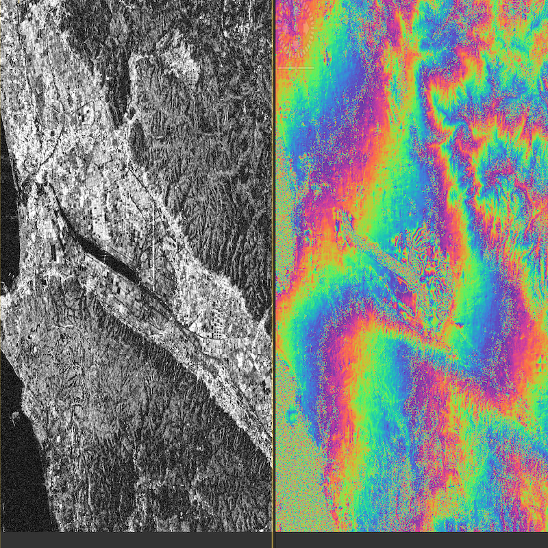
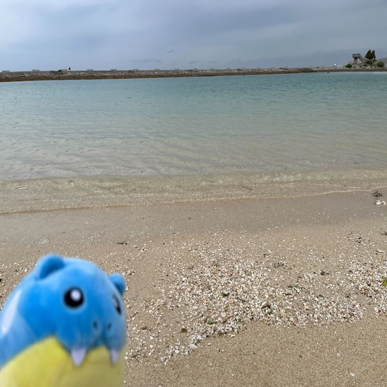
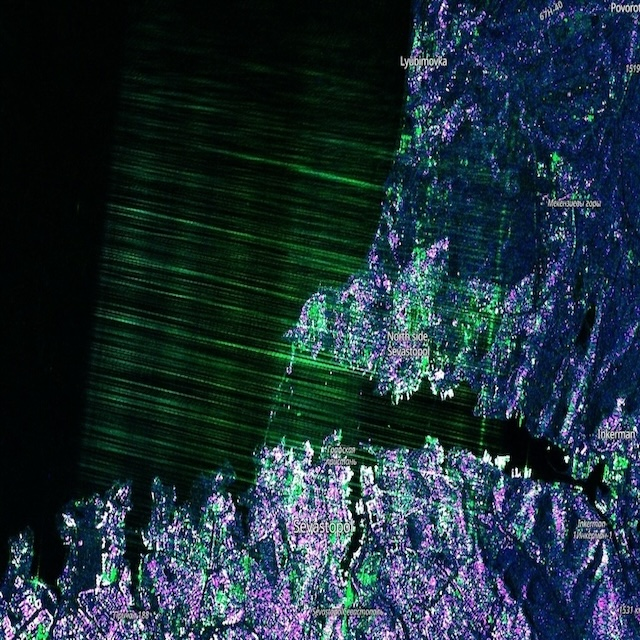
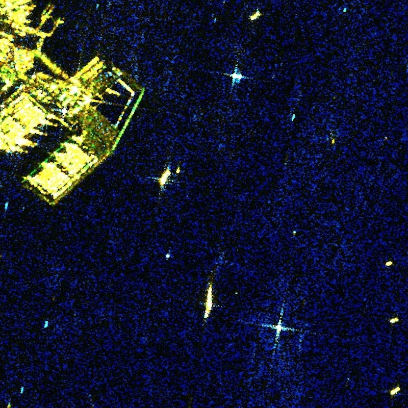
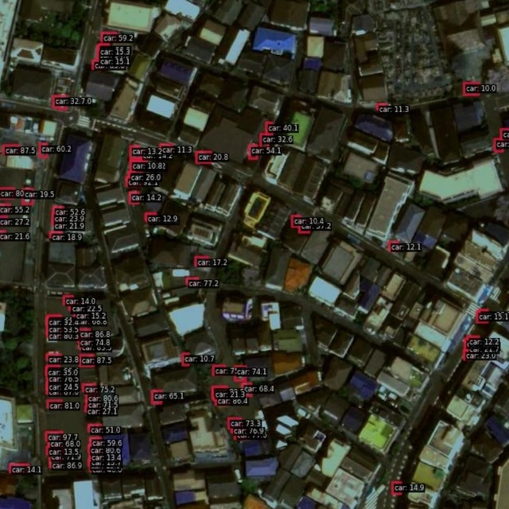
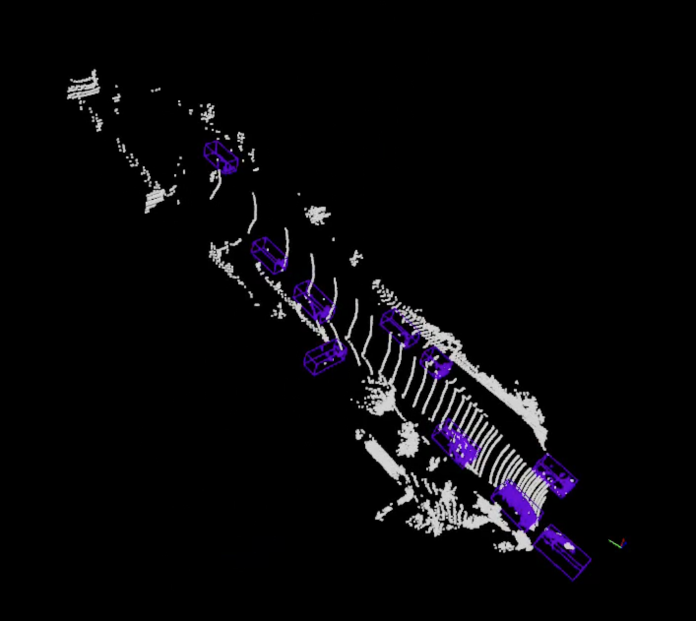
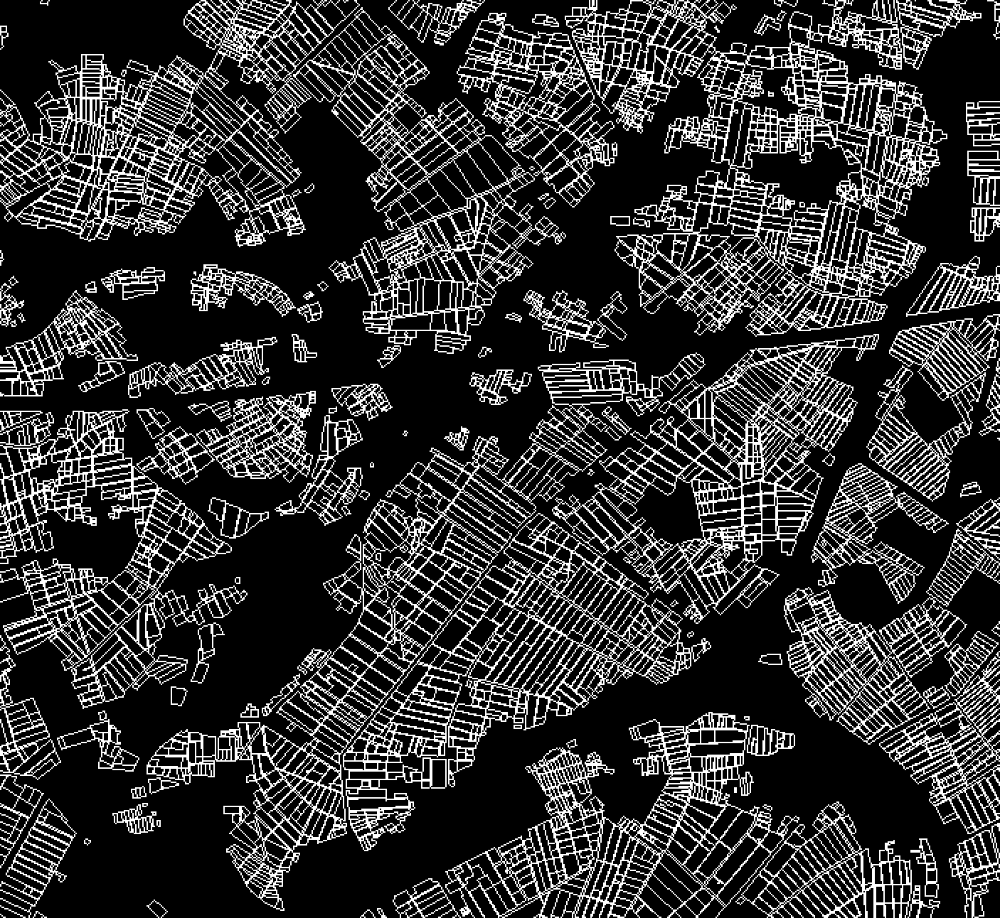
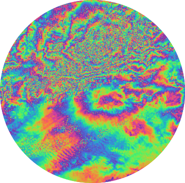
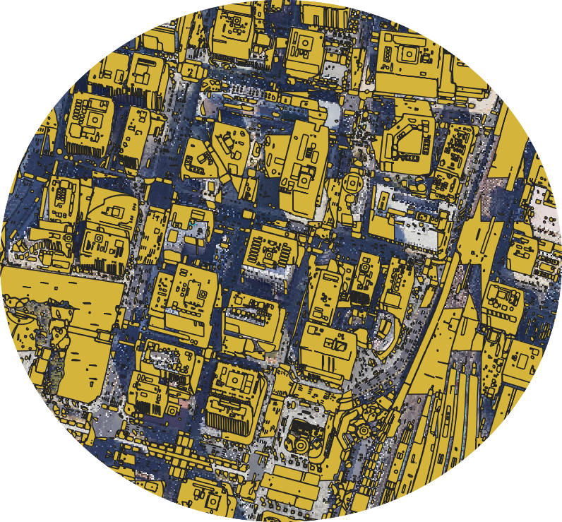
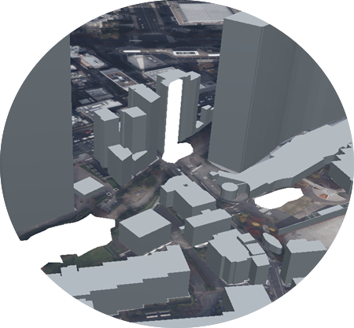

Overview
安井 秀輔（やすい しゅうすけ: Yasui Syusuke) の自己紹介ページです。
衛星データ解析、レーダー・信号解析、コンピュータービジョン・データサイエンス、点群データ処理、GISデータ処理などの技術に興味を持っています。
スペースシフトで衛星データ解析やAI開発、MLOps パイプラインのテックリードをしています。
また、衛星データ処理講師や公演会登壇、技術コンサルやマネジメントなどの活動も行っています。また、Zenn, 宙畑, SAR 解析 Python 実装本などの執筆も行っています。
GALLERY
- 
- 
- 
- 
- 

- 
- 
Interest
-

衛星画像解析
-

レーダー・信号解析
-

コンピュータービジョン・データサイエンス
-

地理空間(GIS)・点群データ・3D処理
Work
所属:
スペースシフト 技術開発部
Core Tech Section Lead
リード AI エンジニア
SAR 解析 & 研究開発
活動:
衛星データ処理講師や公演会登壇
副業:
技術コンサルやマネジメント
Article

Acount

.png)
Activity
Paper:
・国際カンファレンス
ECML, MVA, IGRASS, IEEE, EDHP・日本学会
IEEE Geoscience and Remote Sensing Society Japan Chapter (SAR Workshop 2023)JpGU (日本地球惑星科学連合) IEEE Geoscience and Remote Sensing Society Japan Chapter
宇宙科学技術連合講演会（宇科連66: ウカレン）
Conpetition:
NEDO Supply Chain Data Challenge システム開発部門（災害）1th: Space Shift Inc.ChaBuD2023 2th
Solafune GenerativeAI 3rd
MVA2023 Res 5th
SpaceNet8 7th
Hobby:
ウクライナの探索レーダーによる干渉を Sentinel-1 のサブアパチャー動画にして可視化pic.twitter.com/XJLFcoNhKa
— emmyeil (@emmyeil) March 28, 2024
Sentinel-1 subaperture pseudo color
— emmyeil (@emmyeil) March 28, 2024
Moving Target Radar Jamming pic.twitter.com/jJWZtRp4hi
Contact
-
個人 E-Mail: syuchimu@gmail.com
所属 E-Mail: yasui@spcsft.com
ご連絡お待ちしております。
-